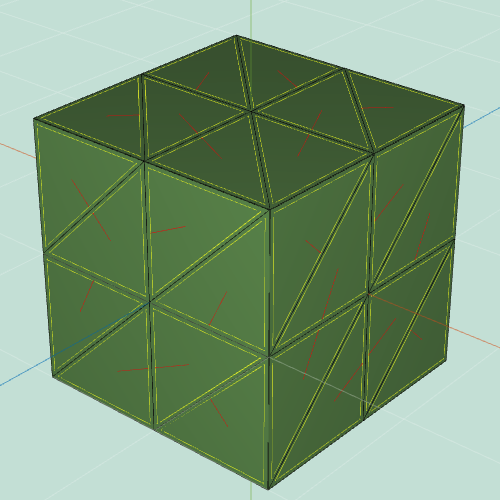

COS426 Assignment 2Modeling — Writeup
Switch to: Interactive Editor
that all images in this writeup were generated directly by my solution code or provided by the course staff (exception: art contest submissions may pass through intermediary software like GIMP)
that no other student has viewed my writeup explanations or my writeup images
that my solution code is my own work; particularly that my solution was not copied from any other student's solution code, and that no other student copied their solution directly code from me
that I did not discuss assignment specifics or view the solution code of any other student besides that of my (optional) partner
that I have followed all other course collaboration and course plagiarism policies as written on the course website.
Danica Truong (dtruong)
Collaborated with: Warren Quan
One (1) Late Day used on this assignment
Features Implemented:- (0.0) Translation
- (1.0) Rotation
- (0.5) Scale
- (2.0) Traversal
- (0.5) Face Area
- (0.5) Per-vertex Normals
- (0.5) Average Edge Lengths
- (1.0) Twist
- (1.0) Inflate
- (1.0) Wacky
- (1.0) Noise
- (1.0) Uniform Laplacian Smoothing
- (1.0) Uniform Sharpening
- (0.5) Triangulate
- (2.0) Truncate
- (2.0) Extrude
- (2.0) Bevel
- (1.5) Triangle Topology
- (1.5) Loop Subdivision
- (1.0) Art Contest
Translation
This feature was implemented by the course staff. I used it as an example of how to loop over the vertices of a mesh.
Here is an example output where the mesh is translated
by 3 along the x axis
:

I did not encounter any particular challenges in implementing this.
Rotation
I used a Euler type in order to apply the rotation to the current positions of the vertexes.

Scale
I looped through the vertexes and multiplied the vector by the given scalar s value.
Base_Mesh=cube.obj&Display_Settings=false;false;flat;false;false;true;false;true;false&Scale=0.5
Base_Mesh=cube.obj&Display_Settings=false;false;flat;false;false;true;false;true;false&Scale=2
Traversal
edgesOnFace: Looped through each halfedge on the given face and returned an array of all the halfedges found. facesOnFace: Looped through the given face's halfedges and found that halfedge's opposite's face which gives us the adjacent faces to the given face. verticesOnVertex: Looped through the given vertex's halfedges and found the halfedge's opposite's vertex which would give us all the neighboring vertices. edgesOnVertex: Looped through the given vertex's halfedges and found the opposite edges to that halfedge (which are the halfedges that will be pointing away from the given vertex v) facesOnVertex: Looped through the given vertex's halfedges and found the opposite halfedge's face which would give you the adjacent faces to the given vertex. verticesOnEdge: Returned both the given halfedge's vertex and the halfedge's opposite's vertex to find the two endpoints to the edge. facesOnEdge: Returned both the given halfedge's face and the hafledge's opposite's face to find the two faces adjacent to the edge. edgeBetweenVertices: By using the already implemented function edgesOnVertex on the given vertext v1, we can loop through the outputed array of halfedges and compare those halfedges' vertex positions with the given v2's position to find the edge that points to both v1 and v2.
Face Area
In order to calculate the given face area, I found all the vertices on the face using the implemented verticesOnFace function. Using the outputed array of vertices, I looped through the array in order and found the area of the triangle comprised of 3 vertices from the array To find the area of the triangle, I used the vector3's Triangle constructor and called .getArea() on said triangle.
Per-vertex Normals
To calculate the vertex normal of given vertex v, I found the faces on the vertex using the implemented function facesOnVertex and summed all the (face normal) * (face area), since the face normals are weighted by face area. Then I normalized this sum with .normalize() to find vertex normal.
Average Edge Lengths
Using verticesOnVertex(v) with v being the given vertex, I looped through the outputed vertex array and found the sum of the distance between each of those vertices with the given vertex. I then divided this sum with the number of vertices, which is the number of edges touching vertex v itself, to find the average length.
Twist
To implement twist, I created a vector3 Euler with the values x = 0, y = vertex's y positoin scaled by the given factor, and z = 0, since you only want to rotate the vertices around the y axis. I then applied this Euler to the vertices' position.
Base_Mesh=large-cube.obj&Display_Settings=false;false;flat;false;false;true;false;true;false&Twist=4
Inflate
Inflate scales each vertex's normal by (the given factor) * (average edge length at the vertex). With each corresponding new scaled vector, I can add it to each vertex's original position to move it along the desired direction.
Base_Mesh=teapot.obj&Display_Settings=false;false;flat;false;false;true;false;true;false&Inflate=1
Base_Mesh=teapot.obj&Display_Settings=false;false;flat;false;false;true;false;true;false&Inflate=-1
Wacky
My wacky function (I also like to think of it as the urchin effect), gets a random value to scale a random vertex in the mesh by in it's normal direction. The number of vertices this scaling is done to is determined by the given factor.
In the shown pictures, you can see that the sphere's vertices are all scaled by a random factor along their normals (all vertices are affected becasue the factor is 1). For the cheetah, there is a lower factor, so only a few vertices are moved.
Noise
By looping through the vertices in the given mesh, we can scale each of the vertices' normals by a (random offset) * (factor) * (average length of edges at the corresponding vertex). I added the new scaled normal to the original position to move the vertex along that scaled normal.
Base_Mesh=hand.obj&Display_Settings=false;false;flat;false;false;true;false;true;false&Noise=0.25
Base_Mesh=hand.obj&Display_Settings=false;false;flat;false;false;true;false;true;false&Noise=1
Uniform Laplacian Smoothing
For each iteration (number of iterations is given with iter), I looped through each of the vertices in the given mesh and calculated an offset which is equal to the vertex position scaled by the negative number of vertices around that vertex. Then, the offset is added to each neighboring vertices' position plus the original position of the vertex before multiplied by the (given delta)/(number of neighboring vertices). The corresponding offset is added to the orignal position of the vertex and this calculation is looped for every iteration.
Uniform Sharpening
Uniform sharpening calls uniform Laplacian smoothing with a negative given delta.
Truncate
Truncate keeps track of the edges of each vertex in the mesh along with each vertex of each edge. Then, I calculated the new vertex on the edges by spliting each edge and moving the newly created vector by the given vertex. The original vertex also is moved by this factor. Then, splitFaceMakeEdge is called to split the original face by the newly created vertices to create a new edge between those vertices. Finally, joinFaceKillEdgeSimple is called to split the original face with the newly made edges and the original edge's split scaled edges.
Extrude
Extrude firstly notes the original number of faces as this will change during the calculation. For each face, I calculated the new vertices that are the original vertices but shifted by the given factor in the vertices' normal direction. I then split the original face and create new edges between the original vertices (according to the original way they were connected) to get new faces. By using splitFaceMakeEdge() on the original face once again, I was able to connect the newly made vertices with each other in parallel to how their corresponding orignal vertices were connected. By using joinFaceKillEdgeSimple on the edges of the original face, I got rid of that edge and combined the new faces made into one face extruding from the shape's side. Lastly, I moved all the new vertices along their corresponding normal vector by the given factor.
Bevel
Firstly, I truncated the mesh by the given factor. Then, I calculated the longest edge on the truncated face, which will always be the edge that was not created during the truncation. Then, I split the truncated edges in half. I called splitFaceMakeEdge on the longest edge's two corresponding faces to connect the neighboring vertices which were just maade. By calling joinFaceKillEdgeSimple on the calculated longest edge, I made a new face which is bounded by the two new edges just made. Lastly, joinEdgeKillVert is called on the original two vertices of the longest edge to create an edge between the neighboring vertices.

Base_Mesh=cube.obj&Display_Settings=false;true;flat;false;false;true;false;true;false&Bevel=0.5
Triangle Topology
Firstly, I triangulated the mesh by finding the vertices on the given face and splitting the face by creating an edge between a vertex and the vertex two vertices over (in an ordered array of vertices). Then, I found the midpoints within the faces, which I caluclated by spliting each of the edges on the triangulated face by half. This is in the midpoints helper function since this calculation is used again. Next, I joined the new vertices around a face by spliting the face and making edges between each of the new vertices. This is in the subdivide helper function since this calculation is used again. Lastly, I made sure that if the user selected a specific face to apply this filter to, the newly created faces would also be shown as selected once the filter is applied by setting the selected status to the new faces.
Base_Mesh=cube.obj&Display_Settings=false;true;flat;false;false;true;false;true;false&Tri_Topology=1

Base_Mesh=cube.obj&Display_Settings=false;true;flat;false;false;true;false;true;false&Tri_Topology=3
Loop Subdivision
In Loop subdivision, I had to keep track of two cases, if the edge was a boundary or not. If the edge was a boundary of the selection, I kept track of them within a different array which is calculated and created in the boundaries helper function since this caluclation is used throughout this filter. If there are boundary edges, I kept track of the positions of the vertices of these boundaries and the boundary faces. If there are boundary edges, the weight used for the middle vertex is 3/4 (from lecture slides). Otherwise, I found the vertices neighboring each vertex and kept track of each neighboring vertices' position scaled by beta, which is 3/16 when there are only 3 neighboors and 3/(8 * number of neighboors) in all other cases (according to lecture slides). The weight in this overall case is 7/16 or 5/8 if there are more than 3 neighboring vertices. The new vertex positoin is the original vertex position scaled by the calculated weight and added to the already calculated new position from the previous cases listed. I then created midpoints along the faces on the current mesh using the midpoints helper function. If there are no boundary edges pertaining to these new vertices, we calculate the new position of the already calculated midpoints as the combination of the 2 adjacent vertex positions and the opposite vertices's position + 2 opposite vertices' position (calculations according to lecture slides). Next, I made midpoints with the boundary faces and the subdivided both the current mesh's faces and the boundary faces individually. Lastly, I set the original vertices's position to the calculated new vertices' positions. I made sure to set the new faces as selected if there was an original face selected before applying the filter.